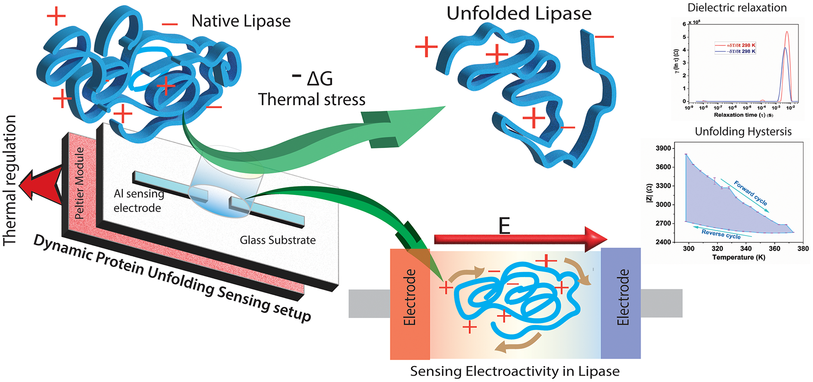

Clinical science role focused on biomedical evidence, disease context, and translational interpretation.
Senior Clinical Scientist · nference
Abhijit Lincon
Physician-scientist working across clinical science, biomedical evidence, biosensing, and translational research.
My work connects medical training with Ph.D.-level research in protein biophysics, bio-electrochemical sensing, microfluidics, nanomedicine, and biomedical data analysis. I focus on turning complex biological and clinical evidence into interpretable scientific insight.
Profile
Clinical judgment, experimental depth, and data fluency.
I am a physician-scientist and Senior Clinical Scientist at nference, Bangalore, with research training from IIT Kharagpur in label-free sensing, protein unfolding dynamics, molecular simulations, microfluidics, nanomedicine, and diagnostic platform development.
Medical foundation extended through technology-led biomedical research and doctoral work.
Research spanning impedance spectroscopy, biosensing, drug-testing systems, and nanomedicine.
Research
Research interests
I work at the interface of clinical interpretation, diagnostic technologies, experimental biophysics, and biomedical data.
Clinical Science
Clinical reasoning, evidence synthesis, biomedical context, translational interpretation, and medically grounded scientific communication.
Biomedical Data
Signal processing, statistical analysis, hypothesis testing, data curation, visualization, Python workflows, and clinical data interpretation.
Biochemical Sensing
Bio-electrochemical diagnostics, biosensors, label-free impedance readouts, molecular assays, and device-level sensing workflows.
Translational Platforms
Microfluidics, nanomedicine, molecular biophysics, protein unfolding, anti-atherosclerotic drug testing, and point-of-need diagnostics.
Skills
Skills and methods
Clinical Science
- Clinical evidence interpretation
- Biomedical diagnostics
- Therapeutic and disease-area context
- Scientific writing and review
Laboratory and Assay Skills
- Electrochemical analysis
- Immunoassay and biochemical assays
- Raman, UV, FTIR, AFM, XRD, and electron microscopy
- Cell culture, optical microscopy, and fluorescence microscopy
Device and Platform Skills
- Microfabrication and soft lithography
- Metal thin-film deposition and oxygen plasma
- Digital microfluidics and 3D printing
- Nanoparticle synthesis and characterization
Computational and Project Skills
- Python, C++, MATLAB, SPSS, Origin, and Excel
- COMSOL, ABAQUS, and GROMACS
- Statistical analysis, signal processing, and machine learning
- Project management, mentorship, and cross-functional collaboration
Patent
Label-free multispectral drug-testing system
Lincon, A., Yadav, S. K., DasGupta, S., and Das, S. A label-free multispectral anti-atherosclerotic drug testing system. Indian Patent filed: Patent Application No. 202431046888, dated 18-06-2024.
Selected Work
Projects and publications

Drug testing platform
Capturing in-vitro electro-mechanochemical signals in a label-free drug testing system for atherosclerosis
Sensors and Actuators B: Chemical, 427, 137182, 2025.

Recent RSC publication
Probing metastability, relaxation dynamics and interfacial energetics in lipase unfolding by hysteresis-encoded real-time electrical impedance
Physical Chemistry Chemical Physics, 28(31), 18881-18892, 2026. DOI: 10.1039/d6cp01446a.
Graphical abstract via the Royal Society of Chemistry article page.

Protein dynamics
Non-faradic impedance analysis of protein macro-ions
Electrical impedance technique for studying charge redistribution during thermalized protein unfolding.

Biosensing
Probing silver nanoparticle mediated mitigation of UV-photolysis in proteins
International Journal of Biological Macromolecules, 256, 128271, 2024.

Microfluidics
Development of GO-PDMS composite dielectric for rapid droplet movement
Chemical Engineering Science, 230, 116175, 2021.
Nanomedicine
Gelatin-decorated graphene oxide nanocarrier for pH-responsive delivery
International Journal of Pharmaceutics, 651, 123737, 2024.

Biomaterials
Biodegradable solid polymer electrolytes from cataractous eye protein isolate
ACS Applied Bio Materials, 7(4), 2240-2253, 2024.
Work Experience
Clinical, research, and translational roles.
Senior Clinical Scientist, nference
Bangalore, India. Clinical science role bridging medical context, biomedical evidence, data interpretation, and translational research judgment.
Senior Project Associate, Biosensors & Microfluidics Lab
Indian Institute of Technology, Kharagpur. Molecular dynamics simulations using GROMACS on the IIT Kharagpur HPC cluster to investigate thermal unfolding of porcine pancreatic lipase.
Senior Research Fellow, Biosensors & Microfluidics Lab
Developed label-free impedance-based microelectrode platforms for protein unfolding, amyloid disaggregation, and atherosclerosis drug testing, integrating GROMACS, COMSOL, and spectroscopy validation.
Medical Officer, B.C. Roy Technology Hospital
Managed outpatient and emergency care for students, staff, and dependents; performed primary diagnosis, minor procedures, and specialist referrals.
Medical Officer, Community Health Centre, Khajuriakata Govt. Hospital
Delivered primary and emergency care, supported maternal-child health and immunization services, supervised health workers, and conducted public-health outreach.
Education
Medical training followed by technology-led biomedical research.
Doctor of Philosophy, IIT Kharagpur
Thesis: Unraveling Structural Dynamics in Unfolding of Protein by non-Faradic electrical impedance spectroscopy. CGPA: 9.75/10.
Master in Medical Science and Technology, IIT Kharagpur
Thesis: Development of Paper-Based Quantitative Detection System for Serum Lipase. Institute Silver Medalist; CGPA: 9.58/10.
Bachelor of Medicine, Bachelor of Surgery
SCB Medical College, Cuttack. First class with distinction.
Conferences
Recent presentations
Integrated in-vitro Label-free Multispectral Sensing of Micropathological Fingerprints. International Conference on Frontiers in Translational Bioengineering for Healthcare, Ranchi, India.
Graphene oxide decorated with gelatin: a nanocarrier for pH-responsive therapeutics toward atherosclerosis plaque. 48th FEBS Congress, Rome, Italy.
Sensing dielectric relaxation in thermal unfolding of lipase. ACS Spring Meet, Indianapolis, US.
Contact